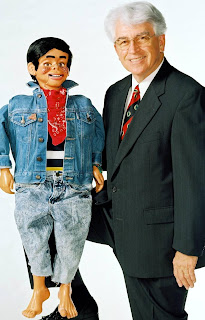

"eye" spy
11/1/2011
{kind=link}

Ralph Green (photo right) and I got our start in ventriloquism in a very similar manner. Both of us took up ventriloquism in the late '50s at nearly the same age (Ralph is a couple years younger than me). I built my first dummy using the directions in Paul Winchell's Fun & Profit book. Ralph use the information in Winchell's book to add moving eyes to his original dummy, a Jerry Mahoney purchased at a toy store.Ralph uses his figure mainly in church services and tells the following story:
A few years ago when I unboxed my original vent figure built from the Winchell instructions, I, too, found one eye had fallen back into his head! Do you suppose there was a defect in the instructions? (Not likely.) Ralph's current figure seen in the picture is Danny DoLittle, made by Lovik and sold by the now defunct California Maher Workshop."On one occasion (while using his first dummy), one of his eyes fell back into his head during a performance and I had to have him put his face down between my neck and shoulder. He continued to "talk" for a while and was complaining about a bad head ache so he wanted to go to bed. I could not let the kids see a puppet with a missing eye."